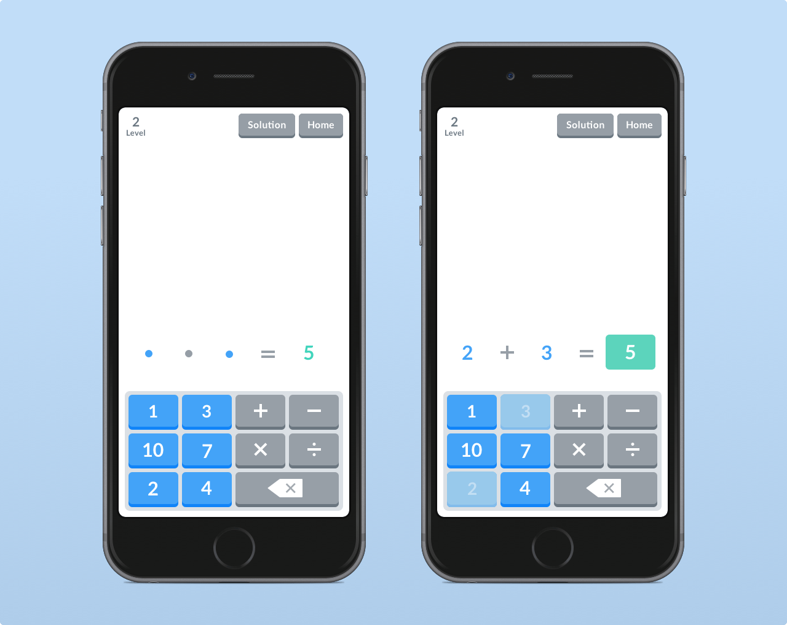
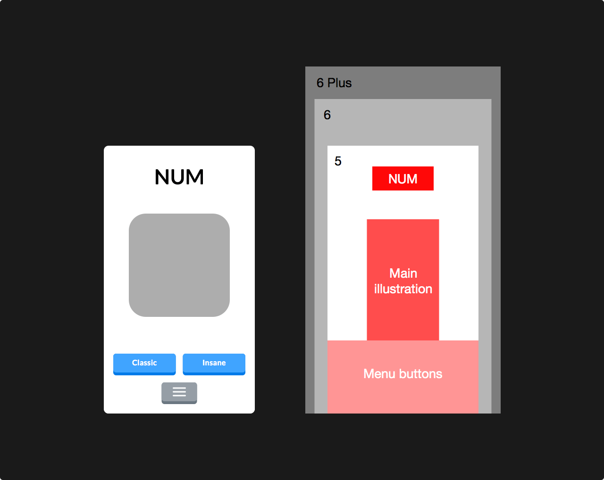
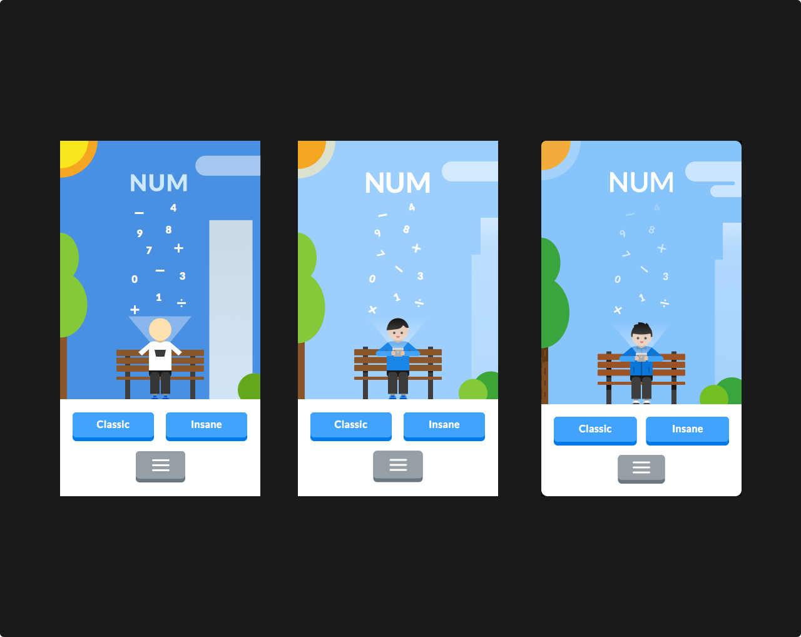
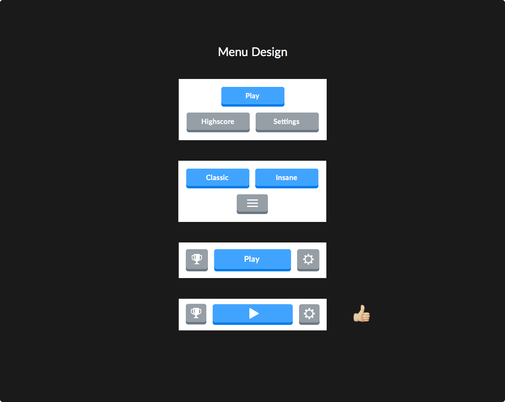
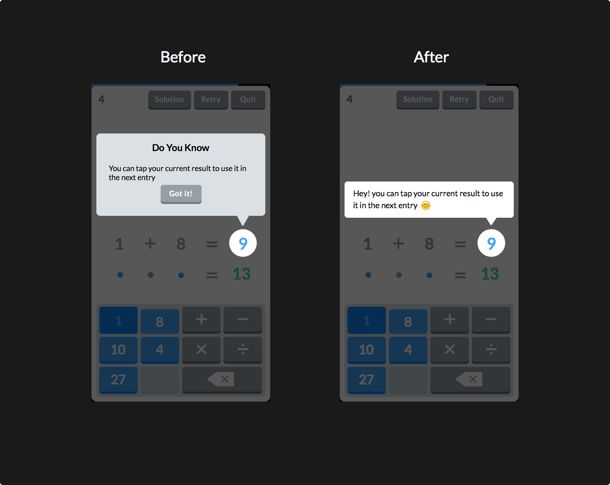
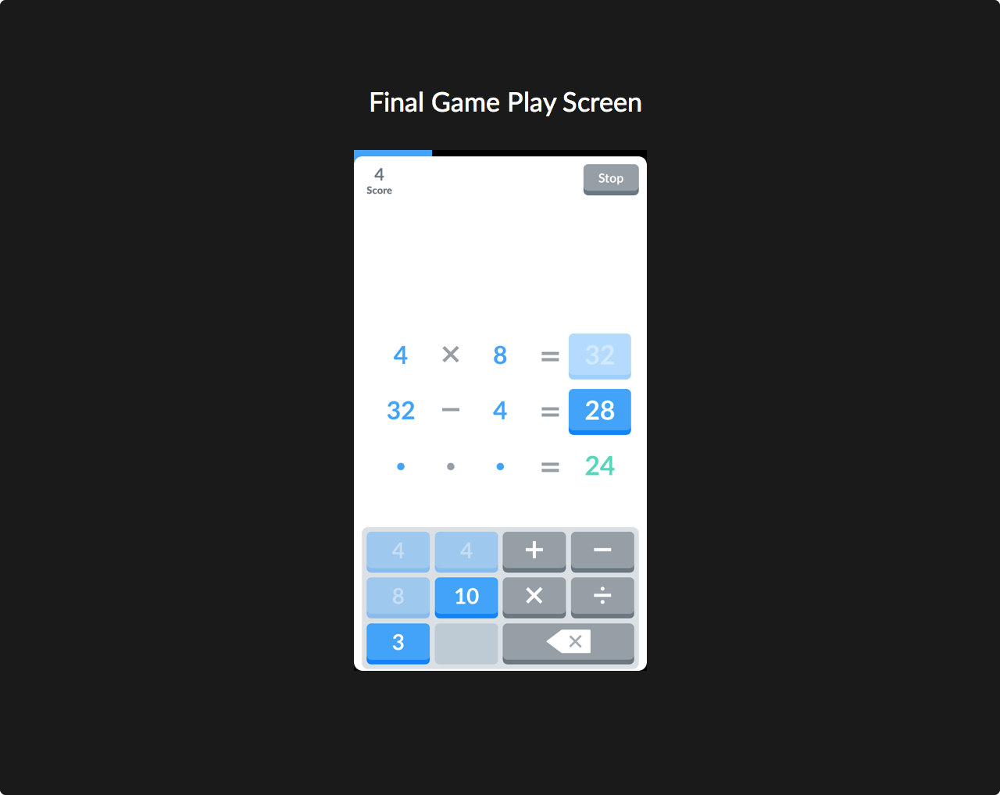
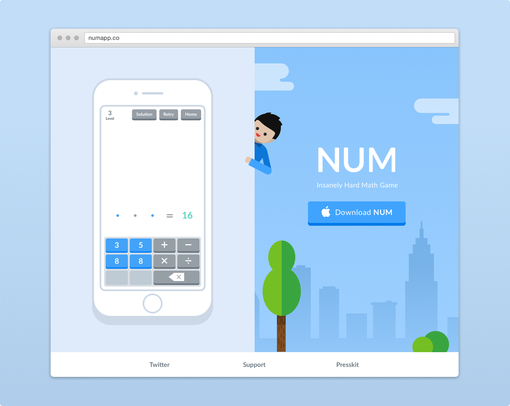

PROCESS ANALYSIS
Making Math Fun, NUM’s Design Process

Num is a challenging and addictive educational iPhone game I worked on with my partner as a passion project. The main goal of this game is to create a fun and engaging way for young children to practice their mental mathematic calculation skills. Num’s objective is for players to fill in the correct math expression (left-hand side) that satisfies the solution number (right-hand side) from the given numbers and operators. With the design focus of unique but intuitive gameplays, I believe Num is a great companion for children or even adults to sharpen a skill that can be utilized in their daily lives.
My role in this project included all design-related tasks starting with brainstorming and sketching out different core gameplay designs on paper, which allowed me to ideate visually to find the best solution. I then moved on to design static mockups of the game's interface and user experience on a vector graphics application called Sketch. During this process, I created a design style as well as illustrations to evoke the game's playful and friendly characteristics. Lastly, I designed the in-game animations using motion graphics tools such as Adobe After Effects. Bringing liveliness to the game through animation is important as it helps engage players on an emotional level.
Homescreen and Navigation
One of the main purpose of the home screen beside providing clear direction on where to user should navigate to is provide a clear message on what the game is about. In this case, Num achieved a simple and playful design with the illustration and navigation system I've designed.
  Challenges
Some of the challenges I faced during the design process included inconsistent design patterns for tappable elements as our play testers were confused about which elements in the game were interactive. To solve this problem I created a set of design guidelines to improve the consistency of the game, where buttons behave and look distinct from non-interactive elements.
 Result
Num was a success as we managed to gather over 25 thousand downloads with an average of 4.5 out of 5 stars rating on the Apple App Store.
